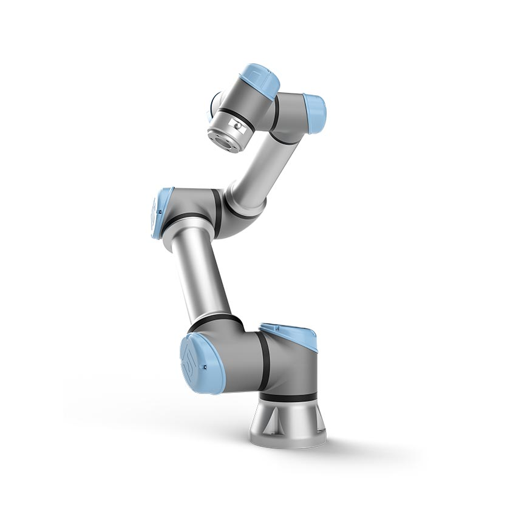
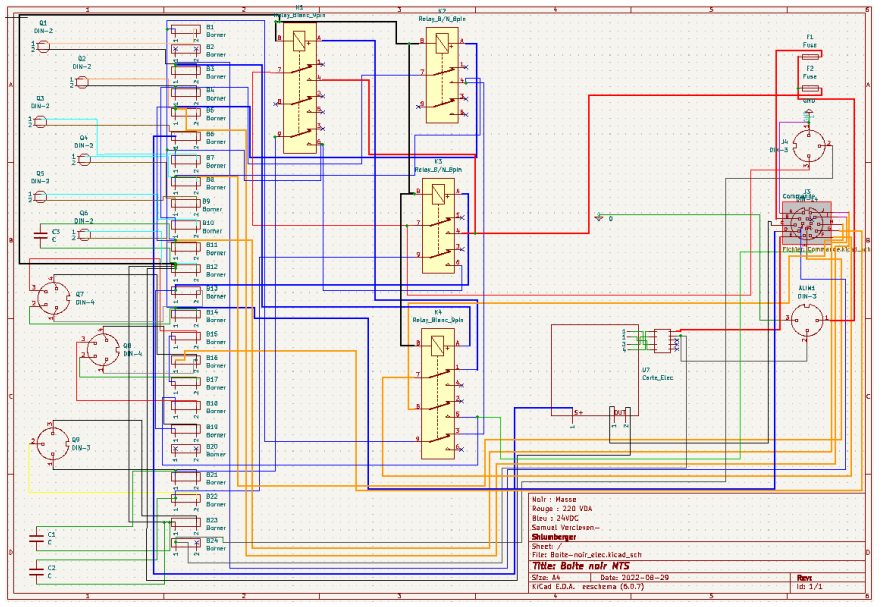
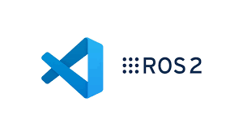
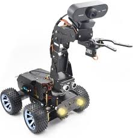
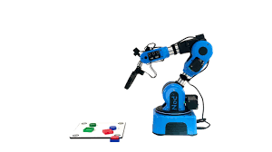
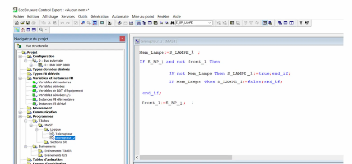

Du bac technologique à l'école d'ingénieur, par le terrain industriel.
Étudiant ingénieur en robotique et industrie 4.0 à l'ESILV, alternant chez SLB depuis plusieurs années, spécialisé en automatisation industrielle, programmation automate, systèmes de supervision, robotique et intégration terrain.
Un profil construit entre industrie, automatisation et transmission.
Mon parcours montre qu'une filière technologique peut mener à des projets d'ingénierie concrets, à l'industrie internationale et à des responsabilités techniques.
Pourquoi ce site ?
Ce portfolio présente mon parcours, mes projets techniques et mes interventions auprès des jeunes pour montrer les possibilités offertes par les filières technologiques, l'alternance et l'industrie moderne.
Positionnement
Faire le lien entre le terrain industriel, l'automatisation, la robotique, l'IA et la transmission auprès des élèves qui cherchent une voie technique concrète.
Ce que je fais
Je travaille sur des systèmes industriels réels : machines d'essais, armoires électriques, automates, supervision, contrôle de température, retrofits, robotique collaborative et développement d'outils pour fiabiliser les opérations.
Ce que je veux transmettre
Montrer aux lycéens que les filières technologiques ouvrent des portes solides vers l'ingénierie, l'alternance, l'industrie, la robotique et les métiers impactés par l'intelligence artificielle.
Présentation rapide
Une courte vidéo pour résumer mon parcours, mes projets techniques et mon objectif de transmission.
Expérience
Expérience industrielle chez SLB.
Plusieurs années d'apprentissage dans un environnement industriel exigeant, avec des projets mêlant sécurité, automatisation, qualité et intégration technique.
Nov. 2021 - aujourd'hui
Automation Engineer Apprentice — SLB
Reverse engineering et analyse fonctionnelle de machines industrielles de choc.
Automatisation de cycles thermiques sur machines HSM/FHSM avec LabVIEW.
Programmation automate avec Control Expert : Ladder, SFC / GRAFCET et Structured Text.
Développement et déploiement d'IHM sous Vijeo Designer.
Conception, câblage et retrofit d'armoires électriques avec mise en conformité.
Schéma électrique avec AutoCAD Electrical.
Amélioration continue : 5S, White Belt, Yellow Belt.
2024
Continuous Improvement Champion — SLB
Automatisation complète d'une machine d'essais MTS, avec logique de fiabilisation, réduction des manipulations et amélioration du suivi opérationnel.
Nov. 2025 - aujourd'hui
Apprentice Project Lead — Robotics Automation
Responsable technique et organisationnel sur un projet robotique de vissage automatisé avec UR5e : répartition des tâches, suivi d'avancement, consolidation de rapports et préparation des présentations.
Projets
Projets techniques sélectionnés.
Chaque projet est présenté sous forme simple : problème, solution, technologies, résultat.

UR5e — vissage automatisé
Intégration et programmation d'une visseuse électrique sur robot collaboratif UR5e. Développement URCap en Java, logique URScript, gestion des entrées/sorties 24 V, séquences de vissage et tests fonctionnels.
UR5eJavaURScriptI/O 24 V

Automatisation HSM / FHSM
Automatisation de cycles de température pour machines de choc thermique. Communication RS232/RS485, supervision LabVIEW, suivi des plans de test et amélioration de l'exploitation machine.
LabVIEWRS232RS485Test automation

ROS2 — Catch me if you can
Projet ROS2 avec controller, spawner, services, messages custom, paramètres YAML et launch files. Contrôle de mouvement fluide pour éviter les oscillations et les dépassements.
ROS2PythonYAMLLaunch files

Robot mobile avec vision externe
Supervision par caméra fixe, détection ArUco avec OpenCV, serveur HTTP/JSON et robot low-cost piloté par machine d'états. Navigation en espace pixel et contrôle embarqué.
OpenCVArUcoPythonHTTP/JSON

Niryo Ned2 — vision et convoyeur
Workflow pick and place avec déclenchement par capteur IR, convoyeur, pose d'observation, détection vision et placement automatique via pyniryo2.
Niryopyniryo2VisionConveyor

Automates et supervision
Développement automate Schneider sous Control Expert, logique Ladder/SFC/ST, interfaces HMI sous Vijeo Designer et intégration terrain sur installations industrielles.
Control ExpertVijeo DesignerPLCHMI
Compétences
Compétences techniques et organisationnelles.
Compétences issues de projets réels, de l'alternance et de projets robotiques académiques.
Technique
Organisation et terrain
Parcours
Un parcours technologique vers l'ingénierie.
L'objectif est aussi de montrer aux jeunes qu'un bac technologique peut mener à des formations ambitieuses et à des métiers techniques modernes.
Aujourd'hui
ESILV — Cycle ingénieur
Spécialisation robotique et industrie 4.0, avec projets en automatisation, robotique, ROS2, vision et systèmes industriels.
Avant ESILV
BUT GEII — Génie électrique et informatique industrielle
Base solide en électricité, automatisme, programmation, électronique, informatique industrielle et systèmes embarqués.
Départ
Baccalauréat STI2D — option sciences de l'ingénieur
Point de départ technologique. Un parcours qui prouve que les voies technologiques peuvent mener vers l'ingénierie.
Transmission
Interventions lycées, orientation et sensibilisation.
Cette partie montre que la prise de parole, l'orientation et la transmission font déjà partie de mon parcours, avec plusieurs expériences devant des élèves.
Format proposé
Intervention de 45 minutes à 1 heure, en classe, demi-groupe ou amphithéâtre, avec présentation visuelle et échange questions-réponses.
Public visé
Élèves de collège, seconde, première, terminale, STI2D ou profils intéressés par les sciences, la technologie, l'industrie et la robotique.
Objectif pédagogique
Donner une vision concrète des études techniques, des métiers industriels, de l'alternance, de l'IA et des choix possibles après une filière technologique.
Interventions déjà réalisées
Présentation de mon parcours au lycée Eugène Ionesco devant plusieurs classes, avec un retour concret sur les filières technologiques, l'alternance, l'école d'ingénieur et les débouchés industriels.
Ambassadeur étudiant
Participation à plusieurs journées portes ouvertes à l'ESILV pour expliquer l'école, les parcours possibles, la vie étudiante, les projets techniques et l'accès aux formations d'ingénieur.
Présentations dans plusieurs lycées
Interventions dans plusieurs lycées en France pour échanger avec des élèves sur l'orientation, les études technologiques, l'industrie, la robotique, l'automatisation et les métiers techniques.
Initiation auprès de collégiens
Je m'intéresse également aux collégiens, avec l'objectif de réaliser prochainement une initiation autour de mes projets : automatisation, robotique, industrie, intelligence artificielle et choix d'études.
IA, études et prévention
L'objectif est aussi d'expliquer l'IA à une génération qui va grandir avec ces outils : usages utiles, limites, dangers, esprit critique, impact sur les études et évolution des métiers techniques.
Contact
Discuter d'un projet, d'une opportunité ou d'une intervention.
Pour une intervention en lycée, une opportunité professionnelle ou un échange autour de l'automatisation industrielle, vous pouvez me contacter directement par mail ou LinkedIn.